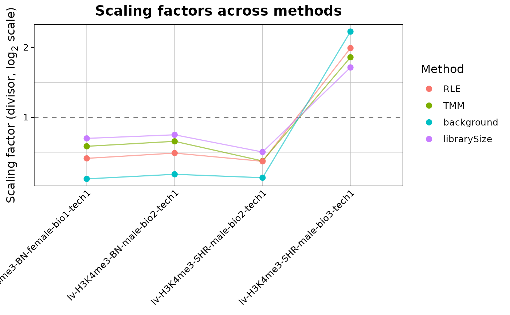

Compares the scaling factors that different normalisation methods give for the same object, without modifying it. The factors already stored in the object, whether estimated or supplied by hand, are shown alongside the others so that a manual set of factors can be checked against the automatic ones.
Usage
plotNormComparison(
counts,
methods = c("librarySize", "TMM", "RLE", "background"),
plotType = "factors",
referenceSample = NULL,
useBackground = FALSE,
useRegionSets = NULL,
minCount = 1,
priorCount = 1,
maxRegions = 20000,
pointSize = 3,
facetScales = "fixed",
title = NULL,
returnData = FALSE
)Arguments
- counts
RegionSetDE.countsobject.- methods
Character vector with the methods to compare, among those accepted by
normalizeCountsthat need no extra input:"librarySize","TMM","TMMwsp","RLE","upperQuartile"and"background". Default:c("librarySize", "TMM", "RLE", "background").- plotType
String with the type of plot, either
"factors"to show one point per sample and method, or"ma"to show the counts of each sample against a reference with the factors drawn as horizontal lines. Default:"factors".- referenceSample
String or numeric position of the sample used as reference by the MA plot. Default:
NULL, the sample with the median depth.- useBackground
Logical value indicating whether the MA plot must be drawn on the background bins rather than on the regions. Default:
FALSE.- useRegionSets
Character vector with the names of the region sets used to estimate the factors. Default:
NULL, all of them.- minCount
Numeric value with the minimum total count required for a region to take part in the estimation. Default:
1.- priorCount
Numeric value added to the counts before the log transformation of the MA plot. Default:
1.- maxRegions
Numeric value with the maximum number of regions drawn in the MA plot, thinned at regular intervals when exceeded. Default:
20000.- pointSize
Numeric value with the size of the points of the factor plot. Default:
3.- facetScales
String passed to the facets of the MA plot, one among
"fixed","free","free_x"or"free_y". Default:"fixed".- title
String with the title of the plot. Default:
NULL, a title describing the plot type.- returnData
Logical value indicating whether the table behind the plot must be returned instead of the plot. Default:
FALSE.
Details
The MA plot is drawn on the raw counts, so what it shows is the bias before any correction: a cloud sitting away from zero means that the sample and the reference differ by more than a common factor. The line of each method marks the shift that method would subtract, which makes the comparison direct, a line running through the middle of the cloud describes the data while one sitting off to the side does not. Methods estimated on the regions follow the regions by construction, so the interesting comparison is against "background" or against a manual set of factors, which are free to disagree.
Examples
counts <- loadExampleData("counts", verbose = FALSE)
# Scaling factors from four methods side by side, before committing to one
plotNormComparison(counts)
#> calcNormFactors has been renamed to normLibSizes
#> calcNormFactors has been renamed to normLibSizes
#> calcNormFactors has been renamed to normLibSizes

# The numbers behind the panel
head(plotNormComparison(counts, returnData = TRUE))
#> calcNormFactors has been renamed to normLibSizes
#> calcNormFactors has been renamed to normLibSizes
#> calcNormFactors has been renamed to normLibSizes
#> sample method scaling.factor
#> 1 lv-H3K4me3-BN-female-bio1-tech1 librarySize 0.8114696
#> 2 lv-H3K4me3-BN-male-bio2-tech1 librarySize 0.8408849
#> 3 lv-H3K4me3-SHR-male-bio2-tech1 librarySize 0.7090262
#> 4 lv-H3K4me3-SHR-male-bio3-tech1 librarySize 1.6386192
#> 5 lv-H3K4me3-BN-female-bio1-tech1 TMM 0.7502489
#> 6 lv-H3K4me3-BN-male-bio2-tech1 TMM 0.7881769